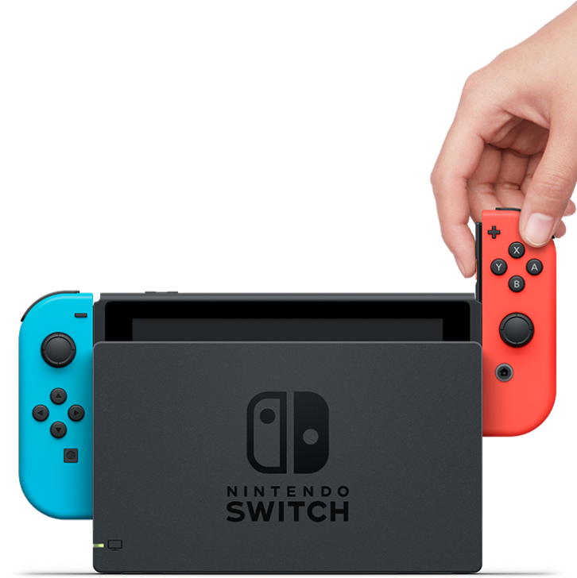

Portabilität
Wohl der Hauptaugenmerk dieser Spielekonsole! Man braucht nicht immer ein drittes Medium, wie einen Monitor, um dieses Gerät zu bedienen. Einfach aus der Docker-Station herausnehmen und weiterspielen! Nintendo fusioniert hier die Fähigkeiten ihrer Heimkonsolen, wie die Wii, mit Handheld-Geräten, wie das DS, in eines zusammen, wodurch für gemeinsame Spieleabende, sowie Unterhaltung für zwischendurch gleichzeitig gesorgt werden kann.

Spiele-Repertoire
Da Nintendo natürlich nicht nur Konsolen, sondern auch eigene ikonische Spiele entwickelt, erhält man durch die Switch erstmals Zugriff auf diese Spiele. Oder wohl eher Zugriff auf den Kauf dieser Spiele, zumindest bis ein neues Nintendo-Gerät auf den Markt kommt. Nintendo ist ja leider keine kleine Indie-Firma mehr. Wenn man aber darüber (und über die unzähligen Remasters schon fast dekadealter Spiele) hinwegschaut, hat man nun nach einigen Jahren schon relativ zahlreiche Klassiker erhalten, zwischen welchen man wählen kann. Ob Mario, Zelda, Pokémon oder Sammlungen alter Retrogames, an Franchise-Spielen wurde ausgesorgt. Um Multiplayer-Funktionen zu nutzen, wie in Mario Kart 8 Deluxe beispielsweise, wird jedoch noch ein kostenpflichtiges Abo benötigt. Wer aber nun denkt, dass die Online-Performance dadurch umso hochwertiger ist, da sich Nintendo vielleicht höhere Kapazitäten leisten kann, irrt jedoch leider.

Feature 3
Beschreibung des dritten Features...

Feature 4
Beschreibung des vierten Features...